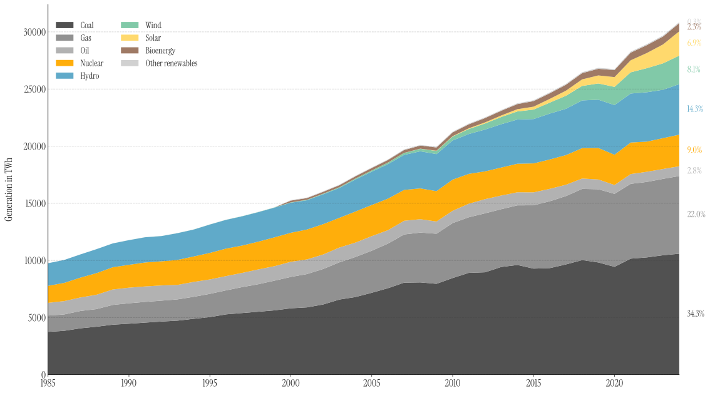
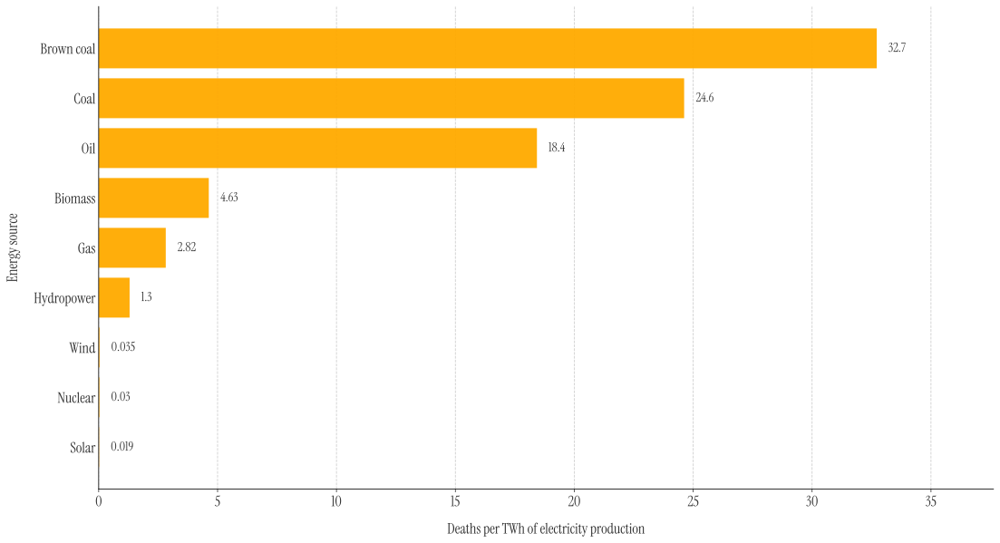

nuclear reactors have evolved massively over time.

Otto Hahn and Fritz Strassmann split the uranium atom in Berlin.
Enrico Fermi achieved the first controlled nuclear chain reaction under soccer field.
EBR-I lit four light bulbs with nuclear-generated electricity.
Partial meltdown. Public confidence cracked.
Reactor 4 exploded. A human error tainted nuclears' reputation.
Earthquake, tsunami, meltdowns. The nuclear renaissance faded.
nuclear reactors have evolved massively over time.
While Coal (34.3%, dark grey) and Gas (22.0%, medium grey) expanded relentlessly to meet global
demand, Nuclear energy barely grew. Its share has remained a thin, steady sliver for nearly four
decades—despite available uranium and technology, we simply stopped building. Each new city, factory, or
digital network added demand, yet we chose fossil fuels over nuclear.
Click the diagram to toggle between views.

Nuclear is one of the safest and cleanest energy sources currently available. One TWh (Terrawatt - Hour)
comes at the "cheap" cost of 0.03 human lives, compared to the 32.7 lives it
takes for a TWh of coal-power.
To put this further into perspective, one TWh is around 100'000'000 kilowatt-hours or just enough energy to
power 100'000 american homes for one year.
Would you rather use someone's finger or 32 entire bodies to power your home?

Now, 32 people might not sound like a lot, however; if we explore the lives it takes per source per year, the numbers look a bit different.
The formula above describes how the total deaths per year were calculated. T
describes the total TWh
generated per year (approximated to 30'000), f & d
the percentage of energy generated from this source and deaths per TWh per source,
respectively.
Scroll to Zoom, Drag to move around.
Despite its proven safety record and low environmental impact, nuclear energy faces a slow decline. Public fear, fueled by historical accidents, and aggressive lobbying from competing energy industries have stifled investment and innovation. Many countries are phasing out reactors prematurely, prioritizing short-term politics over long-term climate goals. As a result, an energy source capable of providing reliable, low-carbon power risks being sidelined, marking the possible end of a nuclear era.